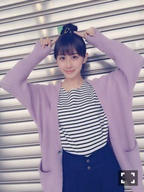
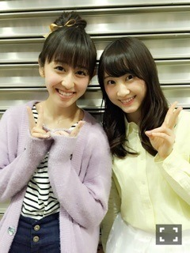

| 2015/04 20 Mon | アンダーライブ！ヤ ンマガ！(´>∀<｀)ゝ |
ちはるーむへようこそ\( ˆ ˆ )/♡

昨日、19日でアンダーライブ3rdシーズン、
無事完走しました\( ˆoˆ )/！！！
来てくださった皆さん、
応援してくださった皆さん、
本当にありがとうございました。
今回はノンストップライブということで、本編はMCなしの、
ずっと歌いっぱなし踊りっぱなしのライブに挑戦しました！
さゆにゃんだけでなく、
ほとんどのメンバーが体力的に辛いものがありました。
アンダーライブは、毎回ハードルが上がっていって、それに応えられるかどうか、精神的に辛いものもありました。
でも、辛いときはメンバーみんなで
支えあって、高め合って、励ましあって。
無事、乗り越えることができました。
本当に素敵な仲間たちです。
わたしは前回の2ndシーズンは、お客さんとして観に行きました。
その時、みんなが最初のアンダーライブより格段に成長していて、キラキラ輝いていて、衝撃を受けました。
それに感動して、たくさんの涙が溢れてきました。
ひとつのライブ中に、
感動を与えてもらって、
涙を流させてもらって、
たくさんの元気をもらって。
アンダーライブは、凄いライブになっていました。
私も負けてられない。
そう思いました。
そして迎えた今回のアンダーライブ。
完璧なパフォーマンスだったとは言い難いけど
全力のパフォーマンスだったとは言い切れます！
ミスもあったし、力不足な部分もたくさんあるけど、
自分達が心から楽しんで、ファンの方を心から楽しませようとする気持ちは誰にも負けません！
一緒に完走した20人のメンバー、
影で毎日支えてくださったスタッフの皆さん、
そしていつも温かく見守ってくださるファンの皆さんに大きな拍手と、感謝を伝えたいです。
本当にありがとうございました！
そしてひめたん。
センターしてくれてありがとう(﹡ˆ ˆ﹡)
ひめたんのセンターは心強くて、すごくカッコよかったよ！！！
ひめたんは人一倍責任感が強くて強がって無理していたのも気付いてたよ。
悩むこともたくさんあったと思うけど、
ひめたんは最高のセンターです！
やっぱりひめたんについていって良かった。

安定の中3組♡
そしてこの前の東京都ビックサイトでの個別握手会、ありがとうございました\( ˆoˆ )/
完売と聞いて、本当に本当に嬉しかったですヽ(；；)丿
わたしに会いに来たい！と思ってもらえるように、これからも頑張ります(> <)！！！

ラフスタイルにお団子(﹡ˆ ˆ﹡)
似合ってるって言ってもらえて嬉しかった〜♡
そして玲奈さんの卒業セレモニーがありました。
玲奈さんにとって、乃木坂で最初で最後だった全国握手会で、唯一のペアを組ませていただきました。
その時に玲奈さんの優しさや人柄に触れ、一瞬で憧れの人になりました。
玲奈さんは、乃木坂46ではなくなっても、
ずっと、私の憧れの先輩です！

ちーちゃん♡って気軽に呼んでいただけるのもすごい嬉しいです(﹡ˆ ˆ﹡)
玲奈さんのファンの方も握手会来てくださって、応援してくださってる方もいて、それもやっぱりすごく嬉しいです(﹡ˆ ˆ﹡)
これからもずっと、玲奈さんが大好きです♡
そして今日発売された、ヤングマガジンさんの
巻末グラビアをやらせていただきましたー(﹡ˆ ˆ﹡)
アンダーメンバー3週連続特集のラストです！
今回は、化粧品の広告をイメージして、
かっこよく撮っていただきました(﹡ˆ ˆ﹡)
メンバーやスタッフさんからも好評ですごく嬉しいですヽ(；；)丿
まだ見てないって方には是非見ていただきたい！！
感想教えてほしい〜♡
では！！
最近、遠藤歩さんとKUNIKAさんの作品が大好きで画像集めるのが趣味な斎藤ちはるでした♡
ばいるんっ
るんるんっ
ちはるんっ
(´>∀<｀)ゝ
コメント(287)
2015/04/20 23:48